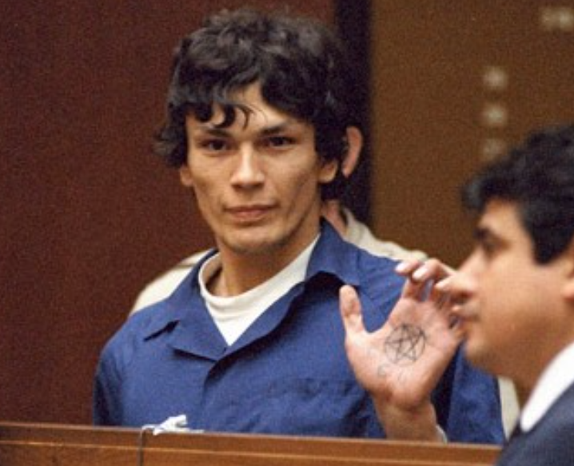

Richard Ramírez, fue un asesino en serie y agresor sexual, que quitó la vida a más de doce personas. recibió el apodo de “Acosador nocturno” o “Merodeador nocturno”, ya que solía atacar a las víctimas en sus casas, en horas de la madrugada. Los crímenes cometidos por Richard Ramírez los llevaría a cabo entre los años 1984 y 1985, en la ciudad de Los Ángeles, California.
Richard tuvo severos conflictos en su niñez dado el carácter maltratador y golpeador del padre; y unido a esto, sería fuertemente influenciado por su primo de nombre Mike, el cual fue un militar que había servido en la guerra de Vietnam. El primo de Richard solía contarle anécdotas, sobre las diversas torturas y mutilaciones que habría realizado a diversas mujeres vietnamitas; y además le mostraba imágenes de los horrores que realizó, tales como, violaciones, torturas, y asesinatos.
Entre 1984 y 1985, Richard Ramírez cometió una serie de ataques en el área de Los Ángeles. Solía entrar en las casas de sus víctimas durante la madrugada, lo que le valió el apodo de “Acosador Nocturno”.
Este asesino no tenía un modus operandi específico para llevar a cabo sus asesinatos, lo cual hizo más difícil la tarea de los investigadores, y la aplicación de técnicas de perfilación criminal.